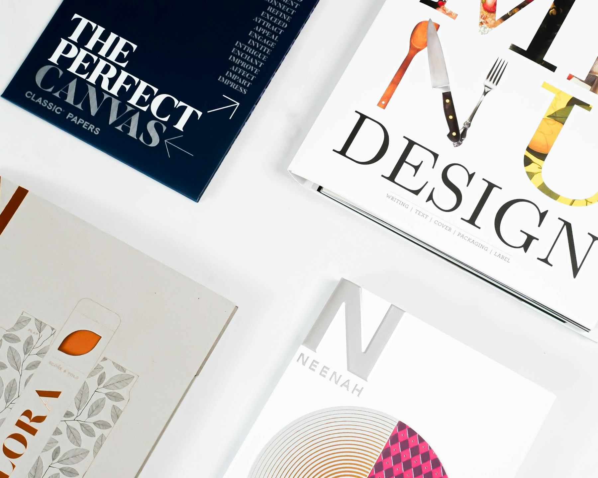

TL;DR
Creating and selling digital products can be done without upfront costs.
Leverage free tools for production and sales, implement strategic marketing, and continuously improve your brand for success.
Understanding Digital Products
Digital products encompass a wide array of goods that can be sold online.
Common examples include eBooks, online courses, stock photos, and templates.
Creators can leverage their skills and knowledge to produce these products at minimal cost.
The beauty of digital products is that they are infinitely replicable, meaning once you create one unit, you can sell it repeatedly without incurring additional manufacturing costs.
It's crucial to identify your niche.
What specific knowledge or skill can you share?
Understanding your audience's needs will position you for success.
Taking time to survey potential customers can provide invaluable insights into what they are willing to pay for.
Choosing the Right Free Tools
There are numerous free tools available for creating digital products.
For document creation, Google Docs can be utilized for eBooks or guides.
Design assets can be created with Canva, which offers an easy drag-and-drop interface.
For video content, platforms like OBS Studio allow you to create professional-quality tutorials without cost.
If you’re looking to build an online course, Moodle or Teachable offers free versions where you can host your classes.
Testing several tools will help you find what works best for you.
Explore their different functionalities to determine which free options meet your needs effectively.
Platforms for Selling Digital Products
Once your digital product is ready, you need a platform to sell it.
Websites like Gumroad or Sellfy let you set up digital storefronts without any upfront costs.
Alternatively, if you have a more established audience, selling directly through your website can be a profitable option.
Platforms like WordPress with WooCommerce allow you to create a shop on your domain.
Whether you go for a marketplace or your own site, consider transaction fees and user-friendliness when choosing.
Join communities relevant to your niche for feedback on your platform choice, helping refine your selling strategy.

Effective Marketing Strategies
Marketing your digital products is crucial for generating sales.
Start by building an email list.
You can use free tools like Mailchimp to send newsletters to potential buyers, keeping them updated about product launches or promotions.
Social media is also a powerful avenue for marketing.
Share engaging content related to your products on platforms like Instagram, Facebook, or TikTok.
Utilize the hashtag strategy to attract followers interested in your niche.
Consider collaboration with other creators to leverage their audience.
Co-hosting a webinar or doing a product giveaway can help you tap into new customer bases.

Building a Brand Permanently
Branding is essential for long-term success.
Start by clearly defining your brand’s voice.
Consistency in messaging across your products, website, and social media helps create recognition.
Use visual elements like logos, specific color schemes, and typography to strengthen your brand identity.
Free tools like LogoMakr can assist in designing logos at no cost.
Encourage customer feedback to refine your brand further.
Listening to your audience’s opinions will help in adjusting your brand position to better meet their needs.
Common Mistakes to Avoid
Many creators stumble when entering the digital product market.
One common mistake is underpricing products.
If you value your work too low, it can undermine your brand's perceived value.
Another mistake is neglecting to promote products effectively.
Even the best products can fail without proper marketing.
It’s essential to develop a strategic marketing plan aligned with your target audience.
Failing to gather feedback and optimize your offerings is also detrimental.
Always seek customer reviews or use analytics to improve your products continually.
Next Steps to Take
Ready to monetize your digital products?
Start by outlining your unique offerings and identify which free tools align with your skills.
Create one product as a test run.
Select your selling platform and ensure you plan marketing strategies alongside product creation.
Don't hesitate to network with others in your field – partnerships can deepen your reach significantly.
Finally, regularly revisit your strategies and offerings.
As you gain more experience and feedback, your approach will refine, leading to increased sales and brand loyalty over time.
FAQ
What types of digital products can I create for free?
You can create eBooks, online courses, templates, stock photos, music, and more using free tools.
How do I market my digital products without spending money?
Use social media, email newsletters, collaborations, and engaging content to market your products effectively.
What are the best free tools for creating digital products?
Google Docs, Canva, OBS Studio, and WordPress with WooCommerce are popular free tools for creators.
How can I build a brand around my digital products?
Define your brand voice, create consistent branding elements, and gather customer feedback for continuous improvement.
What common mistakes should I avoid when selling digital products?
Avoid underpricing, insufficient promotional efforts, and neglecting customer feedback and product optimization.
Photo credits
- Photo 1: lucas Favre on Unsplash (https://unsplash.com/@we_are_rising) (https://unsplash.com/photos/silver-macbook-beside-battery-charger-4x-67z_TaGo)
- Photo 2: Standsome Worklifestyle on Unsplash (https://unsplash.com/@standsome) (https://unsplash.com/photos/girl-in-black-jacket-and-pink-pants-standing-on-white-chair-SigR5QPEA78)
- Photo 3: rupixen on Unsplash (https://unsplash.com/@rupixen) (https://unsplash.com/photos/person-using-laptop-computer-holding-card-Q59HmzK38eQ)
- Photo 4: Carlos Muza on Unsplash (https://unsplash.com/@kmuza) (https://unsplash.com/photos/laptop-computer-on-glass-top-table-hpjSkU2UYSU)
- Photo 5: 2H Media on Unsplash (https://unsplash.com/@2hmedia) (https://unsplash.com/photos/a-close-up-of-some-papers-NmSPbe0bDtc)
- Photo 6: Jen Theodore on Unsplash (https://unsplash.com/@jentheodore) (https://unsplash.com/photos/warning-signage-on-hay-s1E0Aqj52H4)
- Photo 7: Pascal Debrunner on Unsplash (https://unsplash.com/@debrupas) (https://unsplash.com/photos/asphalt-road-under-white-sky-Q3CIUYD97rs)